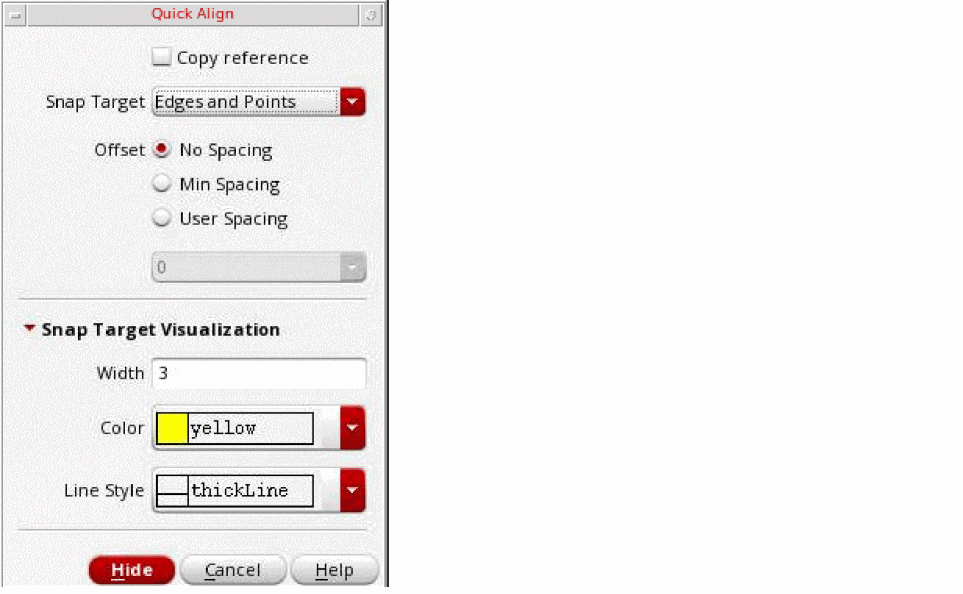
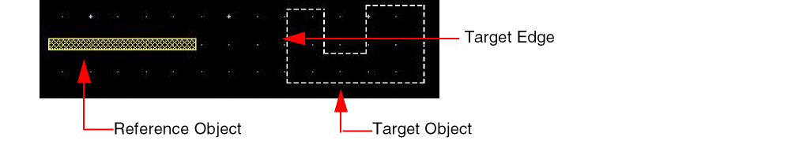
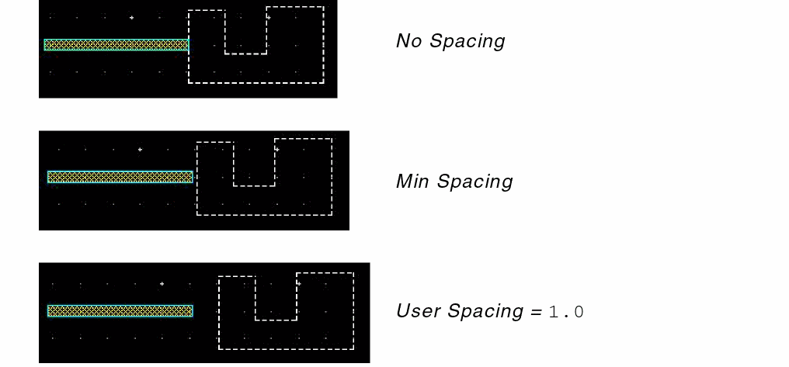
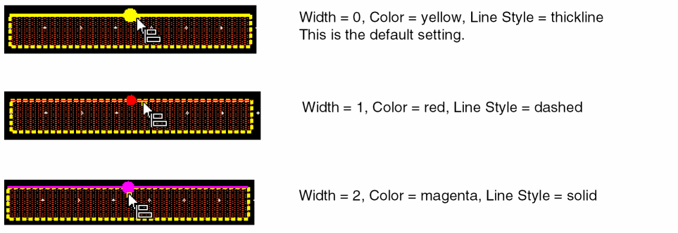
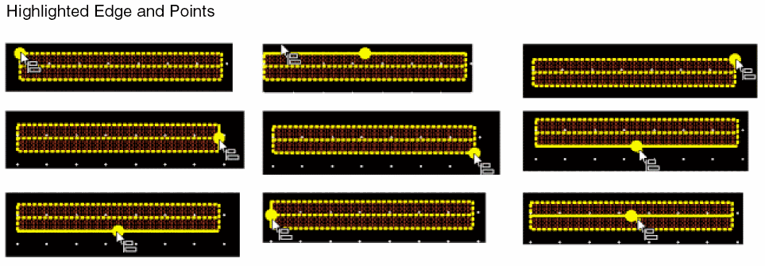
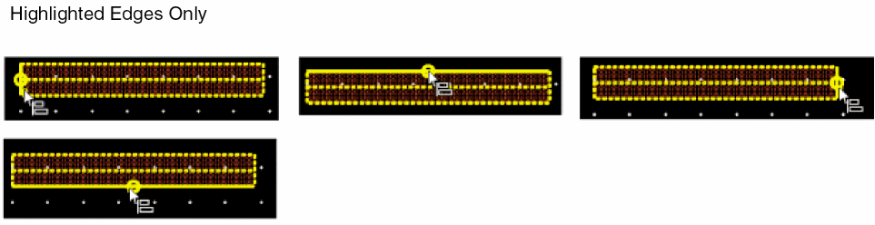
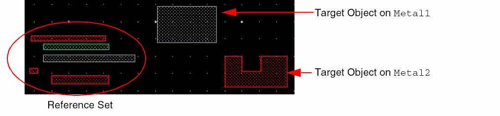
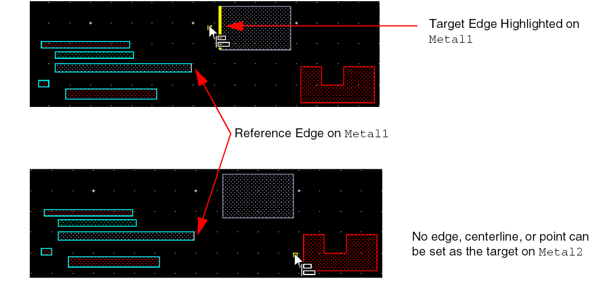
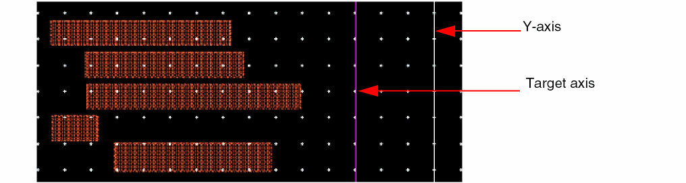

Customizing Quick Align Settings
To customize the Quick Align settings:
- In the layout window, choose Edit – Quick Align.
-
Press
F3.
The Quick Align form opens.
 - Select the Copy reference check box to create a copy of the objects during alignment.
- Set Snap Target as Edges and Points, Edges, or Points.
-
Select the No Spacing, Min Spacing, or User Spacing option to set up the spacing to be used between the reference set and the target edge, centerline, or point. You can also access these options from the Spacing submenu on the Quick Align shortcut menu.
The spacing of the reference object layer from the target determines the spacing of the other objects in the reference set from the target.
The following figures show alignment results when the No Spacing, Min Spacing, and User Spacing options are selected while aligning the reference object to the target edge. The reference object layer isPolyand that of the target isOxide. TheminSpacingvalue specified in the technology file between the two layers is0.3.
You can specify both positive and negative values in the User Spacing field. The following figures depict the examples of resultants with different reference and target edges. -
Set the Width, Color, and Line Style of the highlight edge and point in the Snap Target Visualization section.
Some samples are shown below.
The following figures show some of the points, edges, and centerline highlights in a path.
Use the highlighted points and edges to select the required reference and target edges, centerlines, or points. -
Select the required options from the Quick Align shortcut menu, which is invoked when you right click on the canvas. Select the Snap to targets in reference layer option.
The following example illustrates a scenario when the Snap to targets in reference layer option is selected. The reference set comprises objects onMetal1,Metal2, andMetal3layers. The target objects exist onMetal1andMetal2layers. If the reference edge is on theMetal1object, edges, centerlines, and points on only theMetal1target object can be selected for aligning the reference set. Similarly, if the reference edge is on aMetal2object, edges, centerlines, and points on only theMetal2target object can be selected for aligning the reference set.
 - Select the Snap to Edges option on the Quick Align shortcut menu if you want to highlight only the edges and centerlines in the reference set and target object.
-
To align the reference objects to a target axis, select Vertical or Horizontal from the Target Axis submenu on the Quick Align shortcut menu. Then, click on the design display area.
The target axis is created at the point of click.You can create the target axis, horizontal or vertical, before or after creating a selection set or setting a reference point.
You can press theA+Hbindkey to display horizontal target axis and theA+Vbindkey to display the vertical target axis.
When snapping labels using the Quick Align command, snapping happens only to the origin of the labels.
Related Topics
Object Alignment by Using the Quick Align Command
Return to top